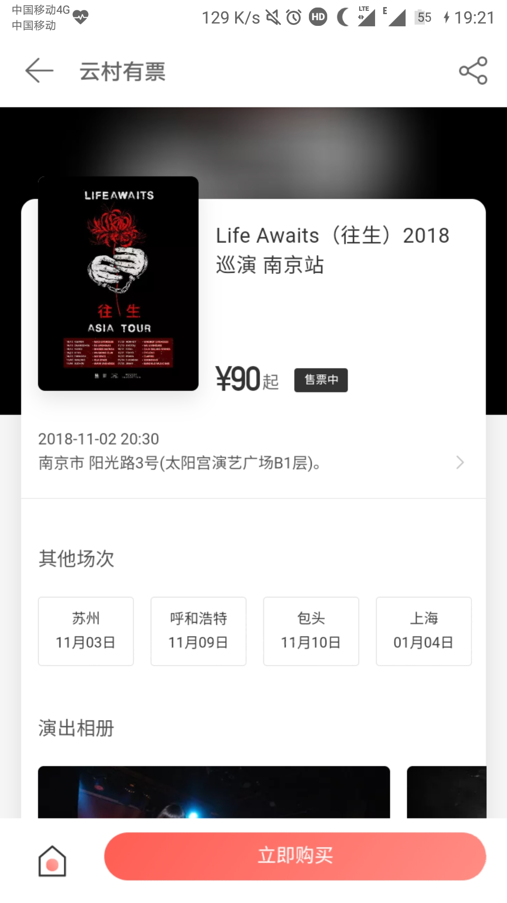

作为一名核狗与资深逼粉，终于趁着学校开运动会和周末一共四天的时间去了一趟南京。

下车就是南京的玄武区，第一感觉就是有点脏乱，随后立马去板仓街找在携程上面订的宾馆。

宾馆离太阳宫很近，走路十分钟就能到，随后骑单车在玄武湖公园看看。

随后便去欧拉艺术空间踩个点，怕晚上找不到。
演出前
暖场的南京本地金属核乐队很牛逼，气氛带的很好。
现场总是比视频里面的更刺激，pogo，死墙，开火车，跳水都有。
演出一直到十一点，南京牛逼。
回到宾馆倒床就睡，第二天起床去东站接从镇江来的同学一起去南工大找同学，路过南京艺术学院，不得不说艺校的气质在校门口就能感觉到。随后在南工大蹭了一节课，晚上照例撸串。
早上坐公交准备离开了。路过应天大街，热河路，盐仓桥，挹江门.
32路还是穿过挹江门。
没有人在热河路谈恋爱，总有人在天黑时伤感
第一次来南京，南京，下次见。